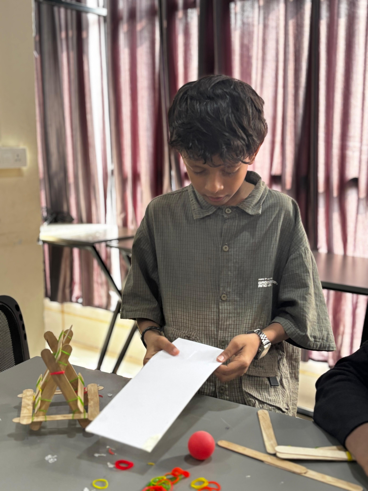
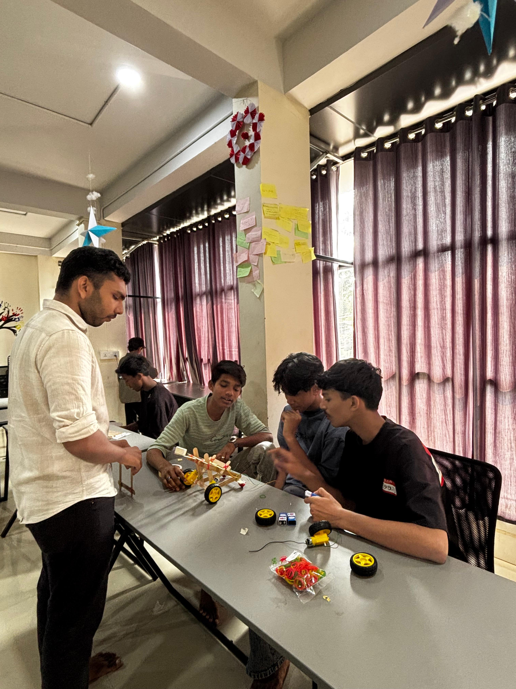

Overview
This session focused purely on physics and mechanical engineering. Students built working catapults, allowing them to visibly see and experiment with potential energy, kinetic energy, and structural strength all in one simple build.
Topics
Newton's Three Laws of Motion
Projectile motion — launch angles and distance
Structural engineering — building strong triangles
Potential vs. Kinetic energy conversion
Activities
Bound ice cream sticks together tightly using rubber bands
Constructed a stable A-frame base to withstand tension
Attached the launch arm and loaded it with elastic potential energy
Test-fired projectiles to measure distance and trajectory
Photos


Highlights
- Newton's laws made immediate sense when felt as physical tension
- Students competed to optimize their launch angle for maximum distance
- Strong teamwork repairing snapped bands and weak structural joints
- Proved that complex physics concepts can be learned with very cheap materials